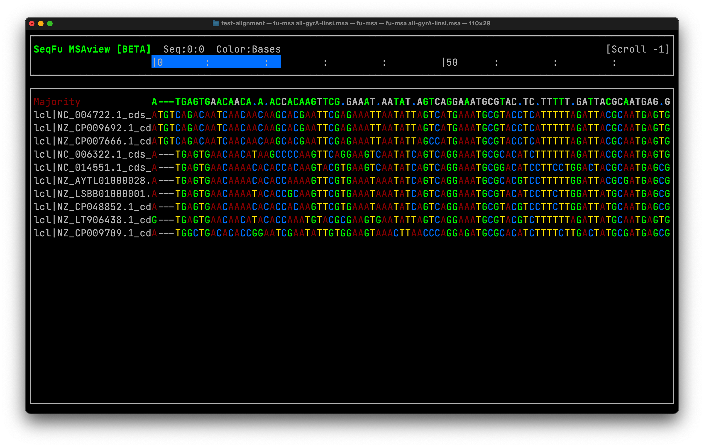

To this date this command will search for 216 complete genome information of Bacillus subtilis strains and download the feature-table file compressed. So the next step is to decompress all of them:
for i in*.txt;dogzip-d$idone
Now the the feature-table file is a is a long table containing each of the features annotated in the genome see the top of a file:
The question now is how to count the lines corresponding to features which is the first line. It contains six types of features (CDS, gene, rRNA, tRNA, tmRNA, ncRNA and misc_RNA). This task could be achieved by many ways, but a general approach to count lines is the way through it. Here there three approaches to follow:
library(tidyverse)library(fs)all_features<-dir_ls("data/features/")|># GCF_000186745.1_ASM18674v1_feature_table.txt is corruptedmap_df(read_tsv)all_features|>head()
Now that we read all the files into the programming environment we can operate over them with different libraries.
Processing a Sanger AB1 file is a very common task in bioinformatics, yet it is sometimes taked for grandted. Many graphical programs allow to process the sequences, yet the task are currently manual involving the trimming and reverse complement generation of the reverse reads (when pair-end sequencing). But, given the vast generation of data on the present, Sanger sequencing is used massively in parallel to generate huge amount of sequences. Therefore, processing “by-hand” becomes an unachivable task.
Several programs have been developed to automate the processing of sequences, an open source library in R is sangeranalyseR.
This produces an specialized R object holding different information from the Sanger processing steps. The entire object can be untangled in a thorough report displaying all the processing information and results using the
Among the data from the report ypu can see that the unaligned contigs ithere is something called a Contig Consensus which is the result of comparing the three consensus out of the rpoB genes of the three strains (302, 321, 455). Now, this is not really the sequence we need right away, however we need the separate consensus of each strain gene. To get theme sangeranalyseR provide a couple of tools.
Now, in the case of the challenge we actually got several genes per strain which is common in molecular biology projects. How do we process all the batch of sequence all at a time? To do so we can split the sequences as folder per gene, then we can use some capabilites of are to iterate an map the sanger processing function to each folder and create a list of processing instances, let’s try this out:
Now that we got the actual multifasta of the genes from all strain, the identification process using blastn from the command line will follow as:
blastn-db nr -query rpoB-unaligned-contigs.mfa -out rpoB-blastn-report.txt -remote
Multiple sequence alignment
Download sequences
Make sure to use the --flat-output avoiding download of multiple metadata
ngd--flat-output-p 4 -s refseq -A genome-accessions.txt -F cds-fasta bacteria
In this case cds-fasta parameter will download the nucleotide sequences of the gene. Other alternatives could be useful such as blast search on a genome database or searching through the GENBANK annotation files (both files also could be downloaded using ngd).
Unwrapping FASTA records
NCBI registries came with an undesirable wrapping around the lines of sequencing which basically is inserting a return character after some established number of characters. Then a way to get rid of them is to use a command line utility from AstrobioMike (Mike Lee) which will give a line per sequence after the FASTA header. We can later assume the the first line after the header will be the entire sequence
for i in GCF_*;doN=$(basename$i .fna);bash bit-remove-wraps.sh ${i}>${N}_unwrapped.fasta;done
Gene searching
A possible way to search throughout the file registries is by using the grep command, that recursively will search each file. Fine tuned it allow to search for the first match, but also for the “after-context” in terms of lines desired to be printed:
for i in*unwrapped*;dogrep-A 1 "gyrA"$i;done> all-gyrA.fasta
After finding the genes, we are now with an almost clean multi-sequence file, because header names are still and will be problematic. How do we programmatically change the FASTA headers? We will see in the next step.
Now the the files has files names that are simply to work with. Which will enable to asses better out sequence alignment matrix.
Sequence alignment
There are many programs that are suited for performed multiple sequence alignments. Perhaps the two most used are MAFFT and MUSCLE both specialized in multiple sequence alignment (that is: when having two or more than two sequences). The second tends to be more accurate when having large data-sets, but the first on is more versatile, fast and accurate on different kind of data-sets.
Both programs take as input a single file containing all the sequences concatenated horizontally (that is a multi-fasta file) careless of the extension but (MFA, FA, FASTA, FNA, etc). And generate a simple output (whether with the -o in MUSCLE or to the std output in MAFFT)
Inspection of the alignment is there very first step for assessing its quality. A CDS tends to generate a codon-like alignment starting with the methionine codon (ATG,GTG) and finishing with a stop (TAA, TAG, etc.). Therefore finding this structure when aligning a complete genes is expected. If a middle fraction of the gene is being aligned ORF might not display any stop codon. Verifying a codon-like alignment shows a biological order on the sequences other that mere artifact of the alignment, that is an evolutionary behavior of the sequence. We can do it using seqfu from the CLI Fig. 1, or interactively with AliView

Figure 1: A viusalization of the gyrA gene alignment using seqfu multiple sequence alignment viewer
A second step is to find the variability of the alignment. A simple way to find that is to calculate simpl stats from the alignment (sites, variable sites, As, Ts, etc.). A powerful cli program to do so is goalign
goalign stats -i all-gyrA-renamed-linsi.fasta
length 2508
nseqs 8
avgalleles 1.7400
variable sites 1202
char nb freq
- 273 0.013606
A 6418 0.319876
C 3633 0.181071
G 4755 0.236992
T 4985 0.248455
alphabet nucleotide
Tip
A more in depth analysis of the alignment could be done with CIAlign.